Cellular Automata (CA) are discrete mathematical models that consist of a grid of cells, where each cell has a finite number of possible states. The states of the cells change over time based on a set of rules that define how the state of a cell is affected by its neighboring cells. Due to its simplicity, CA is used by many computer graphic designers as an alternative to achieve aesthetically appealing simulation of fluids and other physical materials, and to model the complex interactions between materials of varying physical properties. Our project group embarked on the challenge of implementing the CA logic of various materials such as sand, water, and fire, and created scenes where multiple materials interact with each other. Furthermore, we took an extra step and implemented our own renderer that supports both cpu and gpu renderings with significant speedup.
|
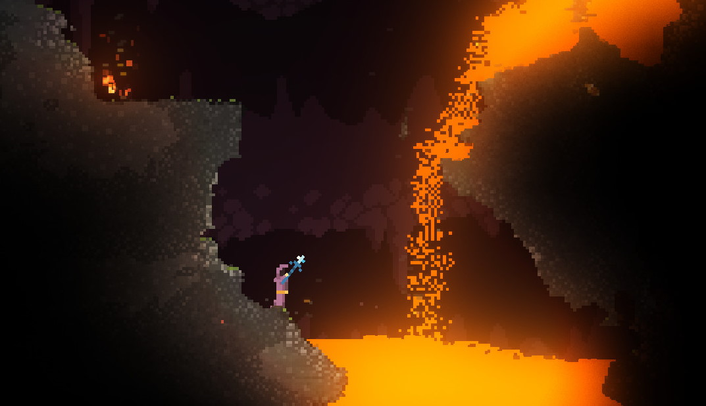
|
We render our scene by treating it as a 2D grid divided into cells, where each cell can contain one of the following cell types: ait, smoke, fire, water, oil, sand, and stone. We also added a way to easily access the 8 surrounding cells of a given cell by calling get_cell_context() function. Furthermore, we created an object for each of the cell types, and at each time step, we iterated through every single cell in the grid, and called the step() function associated with its type to update the grid state in the next time step. In this section we are going to provide details about the rules in the step() function of each material, and go over the technical aspect of our renderer.
To simulate falling sand and sand piles, we took inspiration from [source] and implemented the CA rules for sand as follows:
|
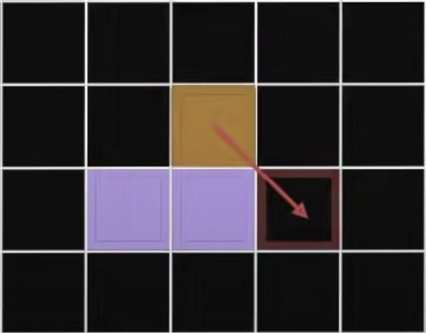
|
The rules for the behavior of water cells is similar to sand in that it also includes a vertically down flow due to gravity. Yet different from sand, it also includes horizontal equalization with neighboring cells and a slight diagonal flow, thereby having a wider range of motion. The mass of each cell is also taken into account, where a water cell at a lower location has a slightly heavier mass than the water cell at the top. Using the mass property, we were able to simulate water compression, which occurs when the mass exceeds a certain limit, leading to the water flow back upward. These rules can be used to simulate the behavior of water in different conditions and can provide insights into fluid dynamics.
|
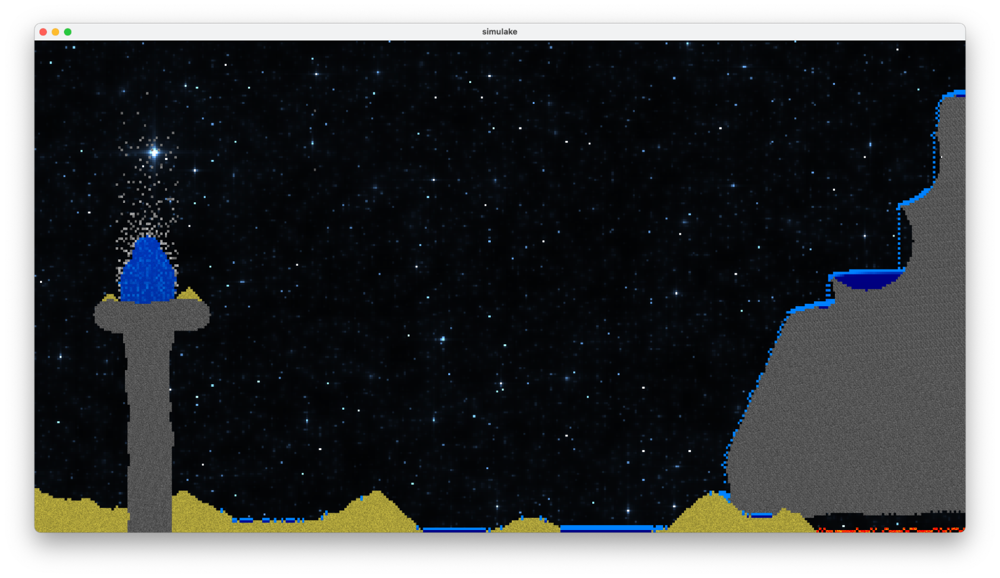
|
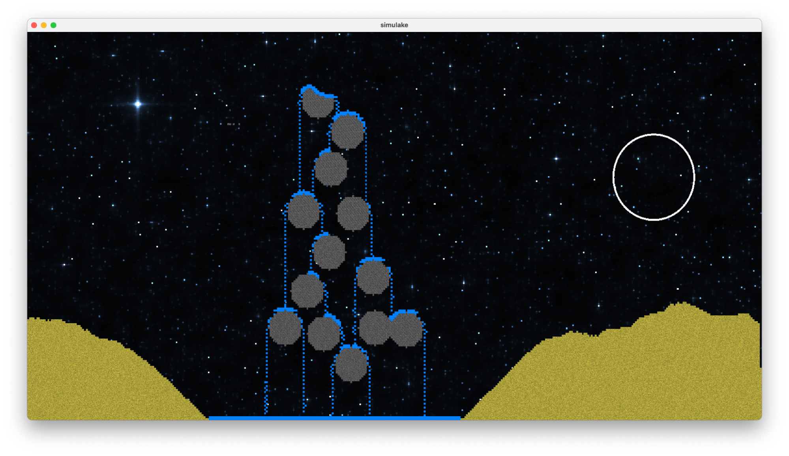
|
Oil is very similar to water, except that we added a property where it will always flow above water when it comes in contact with water cells.
|
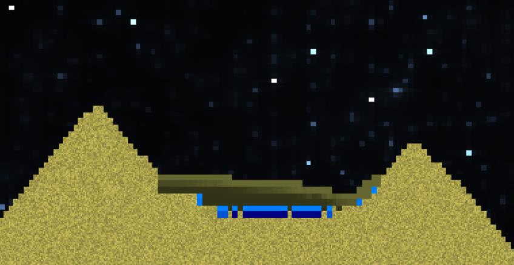
|
Smoke and fire should be talked about together, because smoke is usually a byproduct of fire interacting with flammable materials. For a fire cell, we look at all of its 8 neighboring cells, and update them using the following logic:
Additionally, the fire cell also has a probability of directly turning into an air cell, indicating that the fire has died down.
|
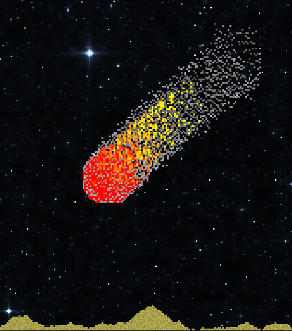
|
In our CA simulation, jet fuel is represented as a type of material that can collide with and flow around other solid objects as well as objects of the same material as itself. The behavior of the fuel is influenced by its surroundings, with a probability of combustion increasing depending on the presence of combustible materials. Once ignited, the fuel will continue to combust on oil, but can be extinguished by water.
|
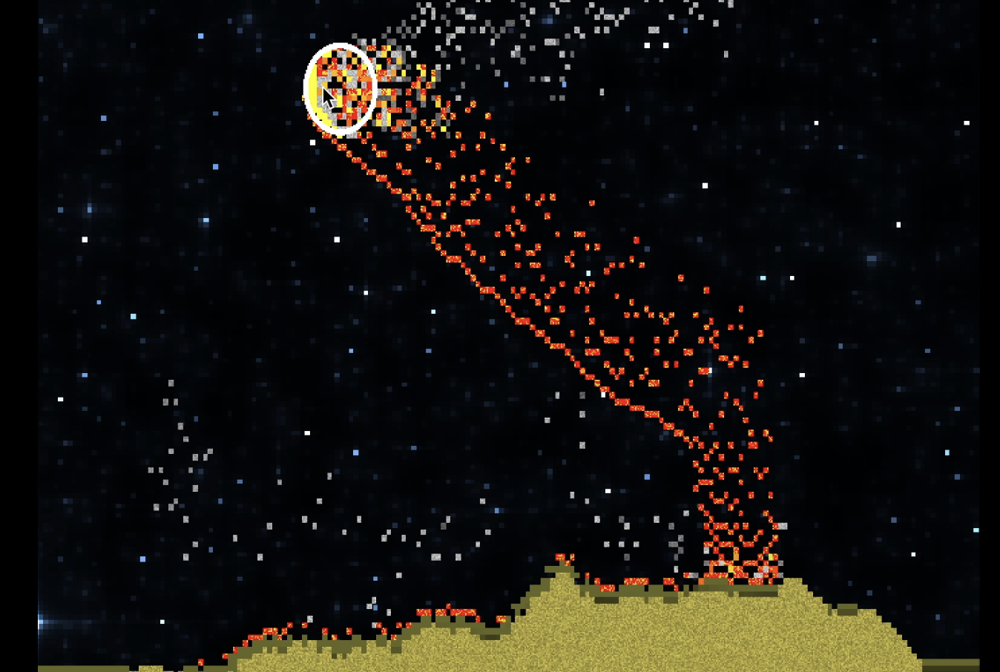
|
The CA logic for simulating ghost fire involves two key rules. First, the fire is similar logic to our earlier implementation of jet fuel, but it burns eternally without the need for additional fuel (thereby it's called ghost fire). Second, the fire destroys sand cells when it comes into contact with them, but can be extinguished by water cells.
|
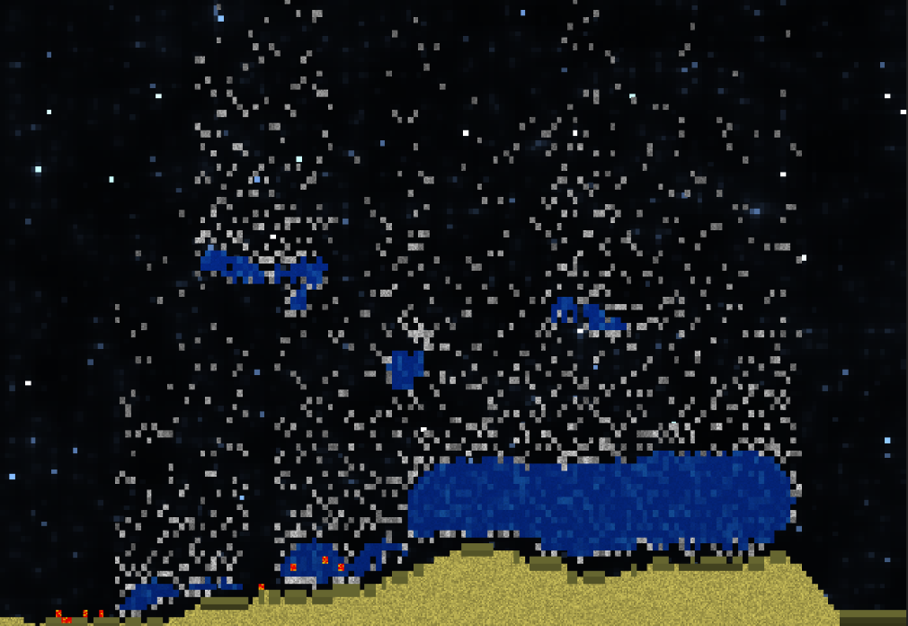
|
Stones are represented as static solid materials that are neither affected by other materials nor any laws of physics. In other words, they exist as immovable objects in the simulation, with no interactions or reactions with their surroundings. This simple model can be useful for creating simulations of static environments, such as landscapes or geological formations, where the behavior of stones does not change over time.
|
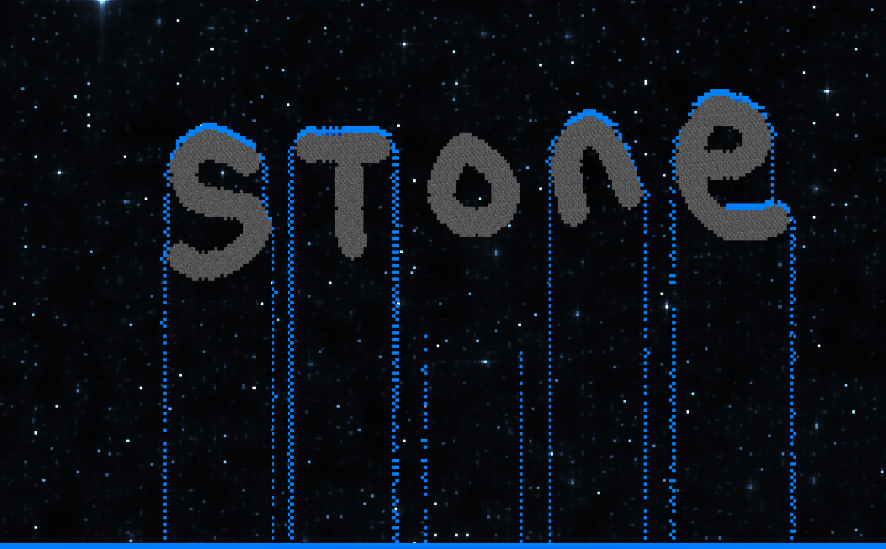
|
|
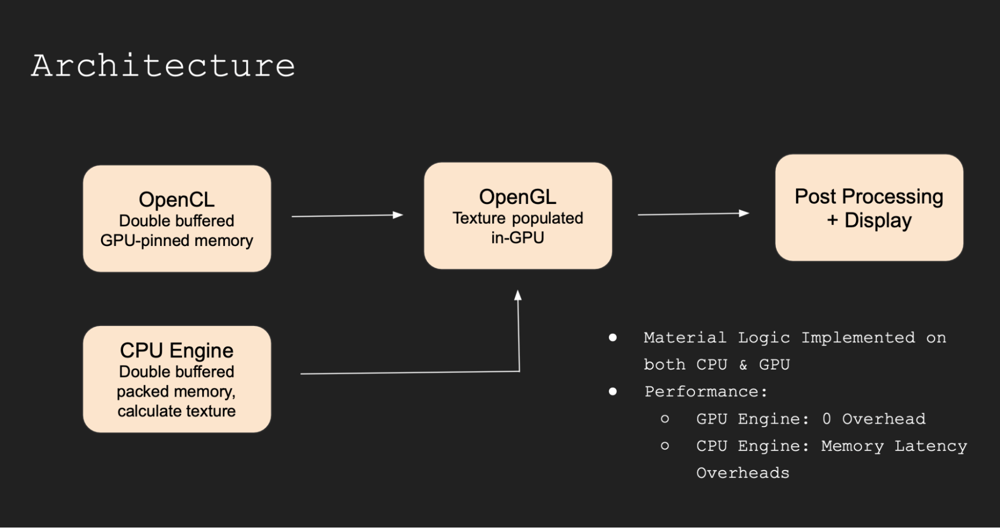
|
We have backend agnostics Base Class for Grid Types, which are responsible for storing and maintaining the simulation state, serialization to file and deserialization from file, and provide api to update state using mouse input and direct function calls.
Our OpenGL (glad, glfw, gl), OpenCL(c) and OpenMP(c++) code are secluded into individual files, which include guards to configure the backend based on compile flags and available support.
GridCell:
Grid:
DeviceCell:
DeviceGrid:
Individual kernels implemented for initialization of grid (defaults to AIR filled grid), random-initialization (for testing / debugging / demo), simulation step, fluid step (second pass helpful for fluids which needs the updated state, to further modify the updated state. executed after simulation step kernel completes), render (encode grid into cl_image, which is connected internally to a glTexture2D), and spawn cells (handle mouse input for spawning and erasing cells).
Data is never directly read nor modified from CPU side, all manipulations to cl_mem buffers storing the grid cells are done on GPU using double buffering.
We just swap the kernel arguments before launch, depending on which grid to use as previous-state, and which for target updated state.
Code involves heavy use of macros for automatic struct, callbacks and function declarations / definitions (inspiration taken from PyTorch codebase), inline function calls and minimized branching.
We added Pseudo Random Number Generation (not supported in any capacity by OpenCL), to make our behaviors more stochastic. This was done by initializing a buffer of random seeds (from C++ stdlib generators) in the GPU, when DeviceGrid is created. Then our random number functions within the OpenCL program, accessed using simple macros, will read in the current cell (row, col) seed, update the seed using Java-Random algorithm (we have support for XOR shift, Mersenne Twister as well), and give a random number. This way, each kernel thread can have its own string of random numbers over time.
We implemented random floating point values, and values between ranges for both integers and floats using this base algorithm. This means we have a one time initialization cost, and get cheap pseudo random number generation.
We added our own debugging and benchmarking structures for time and latency measurement, which can be accessed with convenience macros like `PROFILE_SCOPE(“myscope”)` and `PROFILE_FUNCTION()`, `BREAKPOINT()` etc. We profiled in Debug, RelWithDebug, and Release mode to find bottlenecks and mitigate them.
We used CMAKE xcode generator to generate xcode project files, which can be used for analysis and instrumented profiling by recording program execution with minimal overhead.
On the CPU Side, the biggest bottleneck is `grid.type_at(x, y)` which reads a cell from the 2D grid of cells, and returns its type. This is where 53% of our time is spent, waiting for data to load in. We brought this time down from ~70% by using aligned and packed structs. We maintain >100 fps for resolutions up to 1080p, beyond which we start noticing a performance cliff. This is why we implemented a GPU backend as well.
On the GPU Side, the biggest bottleneck is `glfwSwapBuffers` call which takes ~55% of total time. Even when operating on big world sizes: eg: at 8M cells (4K resolution), we are able to simulate a full scene and compute the next frame, even before the display is ready to receive the next frame after displaying it (resolutions up to 4k all run pretty much >200 fps all the time, we did not test it further, but the profiling data is encouraging and points we have more bandwidth & capacity to exploit with the current implementation).
We implemented all code from scratch including our CMAKE configs. We utilized modern best practices with C++ 20 (CRTP, Lambdas, Perfect Forwarding, Rule of 5, Rule of 3, extensive operator overloading, smart pointers etc.), had strict conventions on code style, static analysis using llvm-clangd and llvm-clangtidy, used addressed sanitizer to check for memory leaks, codebase is const-correct, llvm-clang-format for formatting, google-benchmark for benchmarking, glm with SIMD enabled for CPU side math.
We have ~5k LoC (excluding header files, libraries, CMake scripts, config files).
Problem: Initially, a pixel could only move 1 pixel max, in 1 sim step, but this made water appear very viscous, almost like honey.
Solution: We added a parameter horizontal_reach to allow liquids to spread across n horizontal neighbors in a single time step.
no particular order of cell processing on GPU / Multithreaded CPU, leads to loss of mass / particles due to concurrent overwrites into the next state being computed
We initially wanted to maintain the invariance that a grid cell can read previous state from the entire grid, but cannot update the next state for any other cell indices, ie. a cell can only update itself depending on its neighbors.
We quickly ran into issues with this restriction, when implementing water which has multiple directions of flow of mass, and a single water cell can be filled in by multiple neighboring water cells.
On CPU we decided to deal with this by splitting workgroups into rows, as this was the most prominent access pattern (achieved by our water logic)
On GPU we decided to deal with this by splitting work groups into chunks of 10x10, within which we tolerate race-conditions and compensate for the lost mass and particles. Towards the deadline, we added another Simulation Pass just for fluids, who need to read the updated state, to update the state further (eg: water needs to know where water is right now, to handle its flow edge cases), but were not able to adapt our fluids to take advantage of this in time.
Problem: an oil cell found below a water cell should swap places, but we always ran into undefined behavior because the oil-water swap would face a race condition with regular oil/water flow.
Solution: we decided to implement another GPU grid pass just for vertically swapping fluids of different densities so it wouldn’t conflict with regular flow.
Problem: OpenCL doesn’t have a random number generator, but we needed one to model behavior like sand spread, flame/smoke rise and sand erosion.
Solution: We created a pseudorandom number generator (PRNG) based on an initial seed matrix of random numbers, row/col number, mass and hashing.
Apple deprecated support for OpenGL on MacOs in favor of Metal. We desired a cross platform software, so we had to stick with the OpenGL version we had available on all our devices (MacBooks). We avoided Metal due to its specificity to MacOS, and Vulkan was not chosen for this project, we required a very basic renderer and the verbosity of Vulkan is not justified for our scale of application. Furthermore, we are happy with single threaded render loops, and so did not require any of the additional capabilities offered by the other APIs.
We wanted to implement an engine for CA simulation, with vast capabilities in terms of Number Of Cells being simulated with High FPs. We hit a point on the CPU Version where the memory access latency for just reading and writing to our internal grid representation (despite using Packed Aligned Structs optimized for Cache), was the biggest bottleneck of the program. We decided to add a GPU implementation after realizing the performance roof of the CPU version, as well as profiling the program to not be fully utilizing the GPU resources already available.
OpenGL 3.3 doesn’t support glBuffers, and even writable-textures. Initially we were using vertex attributes to pass in the relevant data for rendering. We hit a ceiling because of the limited number & sizes of these, conflicting with our desire to support more attributes than just Mass (velocity, updated bit etc). We figured out a way to pass more data in using non-writable Textures instead (16Kx16K limit), but the lack of glBuffers, writable buffers/textures, and lack of any support for Compute Shaders lead us to pivot our simulation engine to OpenCL.
We implemented all our materials in OpenCL kernels, and optimized the OpenCL - OpenGL interop in a cross-platform manner such that the CA Grids internal representation is allocated and stored completely in GPU memory, and a special OpenCL kernel can render our grid into a glTexture / Image directly by using the gl resource pointer. This means no copies are made even within GPU memory, no data is copied into CPU, and these GPU buffers can be HOST_READ_ONLY for better performance. All the CPU does in our latest implementation is launch the async OpenCL simulation and render kernels, and then complete a render pass using OpenGL where the target texture is already filled in. Our main render loop is just 1 line of code, drawing our screen size quad, with our computed texture.
|
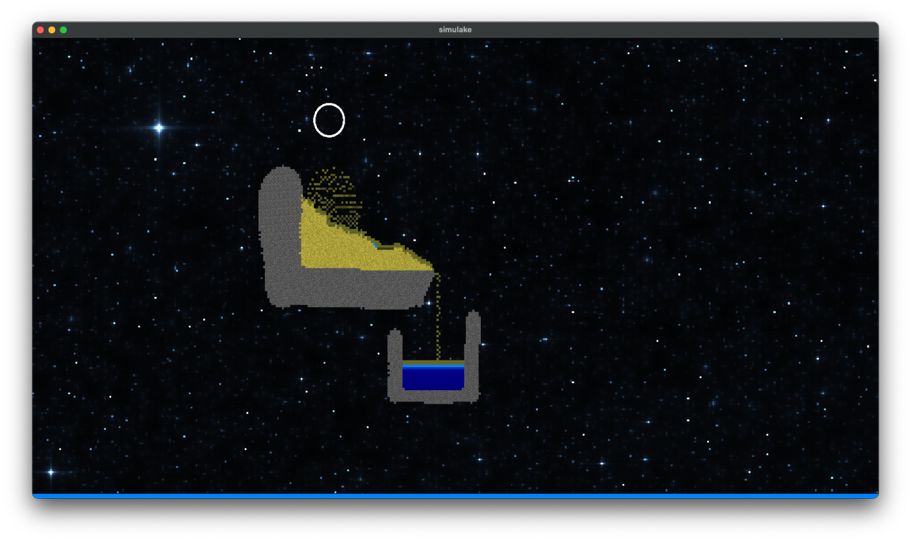
|
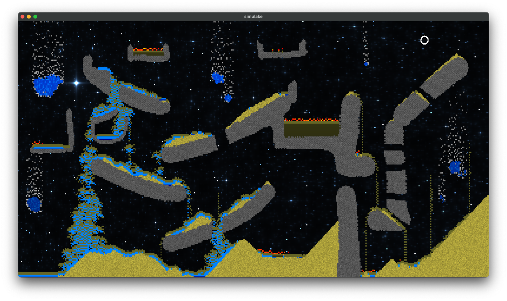
|
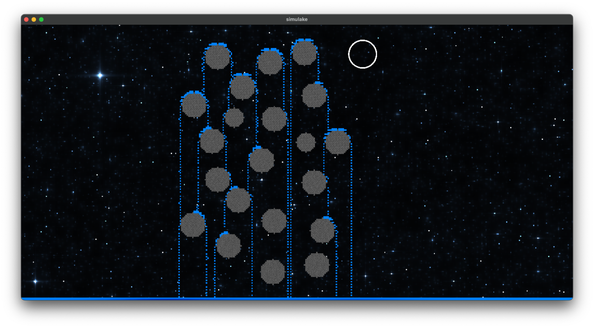
|
Study on Sand Simulation in Noita
An Exploration of Cellular Automata and Graph Based Game Systems